10.06.2023
Nun war ich in der Lage die Seite zu Jütland - 80 - Ravning aufzubereiten. Im Rahmen meiner 2022er Jütland Wikinger Tour war ich am Samstag, 18.06.2022, vor Ort gewesen und habe neue Fotos gemacht, die ich nun endlich einstellen konnte. Außerdem habe ich einige kleinere Ergänzungen / Überarbeitungen vor- und die Literaturhinweise aufgenommen.

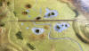

Das Gebäude im Hintergrund rechts beherbergt die kleine Ausstellung, in der sich auch das Landschaftsmodell mit dem historischen Brückenverlauf befindet.
Außerdem waren mir heute auch Nachträge / Änderungen zu Jütland - 81 - Egtved möglich. In der Königlichen Bibliothek konnte ich eine Zeichnung des Runensteins von Magnus Petersen (*04.09.1827 - 01.02.1917, Archäologischer Zeichner und Restaurator), die er am 17.07.1878 für den Professor Ludv. F. A. Wimmer (*07.02.1839 - 29.04.1920, Philologe und Runenforscher) angefertigt hatte, bei meinem Kopenhagen Tripp im September 2022 fotografieren.

09.06.2023
Als nächste Örtlichkeit habe ich mir heute Jütland -79 - Randbøl vorgenommen. Im Rahmen meiner 2022er Jütland Wikinger Tour war ich am Samstag, 18.06.2022, vor Ort gewesen und habe neue Fotos gemacht, die ich nun endlich einstellen konnte. Aus meinem Kopenhagen Tripp im September 2022 galt es die Fotos vom 27.09.2022 einzupflegen, die ich in der Königlichen Bibliothek von den beiden Zeichnungen von Magnus Petersen (*04.09.1827 - 01.02.1917, Archäologischer Zeichner und Restaurator), die er für die beiden Professoren P. G. Thorsen (*07.08.1811 - 06.05.1883, Bibliothekar, Runenforscher und Historiker) und Ludv. F. A. Wimmer (*07.02.1839 - 29.04.1920, Philologe und Runenforscher) angefertigt hatte, machen durfte.

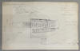
vom 07.05.1875
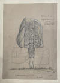
vom 18.07.187808.06.2023
Heute habe ich die Webseite zu Jütland -76 - Tamdrup überarbeitet. Da ich diese Seite bereits am 26.02.2022 umfassend aufgearbeitet hatte, galt es nun nur noch die Fotos zu der Kirche, der Innenansicht und der Altartafeln von meinem Besuch an Freitag, 17.06.2022, im Rahmen meiner meiner 2022er Jütland Wikinger Tour einzubinden.
07.06.2023
Seit gestern habe ich die Ausarbeitung zu dem Runenstein Jütland -75 - Gylling aufgenommen. Es gab hier einige interessante Fakten einzubinden, dazu mehrere Zeichnungen von Magnus Petersen (*04.09.1827 - 01.02.1917, Archäologischer Zeichner und Restaurator) sowie von Rasmus Henrik Kruse (*07.08.1796 - 30.05.1877, Landschaftsmaler und Antiquar). Vorneweg hat Jens Jacob Asmussen Worsaae (*14.03.1821 - 15.08.1885, dänischer Archäologe und Vorgeschichtler) bereits am 29.07.1850 den Fundort aufgesucht und in seinem "Notesbog IV" aus dem Jahr 1850 auf den S. 10 und 11 darüber diese Aufzeichnung vorgenommen.

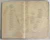
Dessen Tagebücher werden heute in Kopenhagen in dem "Antikvarisk-Topografisk Arkiv" aufbewahrt, worüber ich bei meinem dortigen Besuch am 27.09.2022 Einsicht nehmen und dieses Foto anfertigen durfte.
Die Fotos von meinem Besuch im Rahmen meiner 2022er Jütland Wikingertour - Sonntag, 05.06.2022 - sind nun auch endlich eingestellt. Ein ganzes Jahr ist seither vergangen - unfassbar!

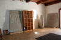
05.06.2023
Über einen Monat hatte ich anderweitige Tätigkeiten, nun war es aber endlich Zeit zurückzukehren! Das Moesgård Museum bei Aarhus lasse ich erstmal noch aus, da es zeitaufwändig wird. Die nächste Örtlichkeit in der von mir selbst festgelegten Reihenfolge war demnach Jütland -74 - der Kanhave Kanal auf der Insel Samsø. Bereits am 17.09.2015 war dort am Original Schauplatz ein Stück der Kanalwandbeplankung mit einer Wikingerschiff Silhouette aus Cortenstahl errichtet worden.

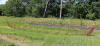
01.05.2023
Nun war Zeit für die Überarbeitung der Webseite zu Jütland -73 - Sønder Vissing mit seinen beiden Runensteinen. Hier nur mal die beiden Zeichnungen von Magnus Petersen (*04.09.1827 - 01.02.1917, Archäologischer Zeichner und Restaurator), die dieser für die beiden Professoren P. G. Thorsen (*07.08.1811 - 06.05.1883, Bibliothekar, Runenforscher und Historiker) und Ludv. F. A. Wimmer (*07.02.1839 - 29.04.1920, Philologe und Runenforscher) angefertigt hat - datiert auf den 01.09.1870 und auf den 18.08.1877.

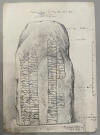

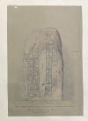
Eigentlich hatte ich am 25.04.2023 mit der Überarbeitung abgeschlossen, als ich doch noch bedeutende Informationen und ein Bildnis zum (angeblichen) Entdecker der beiden Runensteine - Pastor J. L. Rohmann (Jørgen Lindegaard Rohmann, *02.12.1797 -04.06.1860, Pfarrer, Historiker, Ritter des Danebrog) aus Tønning (ca. 4 km Luftlinie südlich von Sønder Vissing - dort war er ca. von 1828-1838 tätig) im Internet entdeckte, die weitere Recherchen nach sich zogen. Die daraus resultierenden Erkenntnisse könnten allerdings bedeuten, dass er (wahrscheinlich) doch nicht der Entdecker der beiden Runensteine war, sondern erst über seinen Briefverkehr mit Christian Jürgensen Thomsen (*29. Dezember 1788 - 21. Mai 1865, war ein dänischer Altertumsforscher und Begründer des Dreiperiodensystems, nach dem die europäische Urgeschichte in Steinzeit, Bronzezeit und Eisenzeit zu unterteilen ist) im April 1837 darauf hingewiesen wurde. Dieser schreibt ihm nämlich, dass er im Winter (1836) von Pastor Engelbreth auf das Vorhandensein zweier vermutlich unbekannter Runensteine bei der Kirche von Sønder Vissing hingewiesen wurde!
19.04.2023
Heute habe ich die Webseite zu Jütland - G - Århus mit einigen Fotos meiner 2022er Jütland Wikinger Tour versehen, die ich bei meinem Besuch vor Ort am Mittwoch, 08.06.2022, aufgenommen habe. Einige textliche Änderungen habe ich auch vorgenommen. Die Nordea-Bank, in deren Keller das Museum lag, gibt es nicht mehr. Die Ausstellung des "Vikingemuseet" ist aber weiterhin - nun zum Preis von 30 DKK (= ca. 4 ) - besuchbar. Bezahlt wird unten in der Ausstellung an einem Automaten mit der normalen Scheckkarte. Aktuelle Informationen zu dem Museum auch in deutscher Sprache - hier.


18.04.2023 (Nachtrag 04.06.2023)
Die letzten vierTage habe ich jeweils etliche Stunden für die Überarbeitung der Seite zu Jütland -72 - Sjelle aufgewendet. Dieser Runenstein hat seine erstmalige Erwähnung bereits im Jahre 1591 und gehört damit zu den ältesten bekannten Runensteinen in Dänemark. Von daher war es auch recht aufwändig alle verfügbaren Quellen einzuholen und zu studieren, viele daraus erlangte Informationen aufzubereiten, meine Errungenschaften aus der Königlichen Bibliothek aus meinem Kopenhagen Studien Tripp im September 2022 und meine eigenen Fotos von meiner 2022er Jütland Wikinger Tour vom 08.06.2022 einzufügen und das ganze in Form zu bringen. Beispielhaft hier nur mal die schöne Zeichnung No. 5 von Rasmus Henrik Kruse (*07.08.1796 - 30.05.1877, Landschaftsmaler) aus seiner Abhandlung "Nørrejyllands Mærkværdigheder i det 19. Aarhundrede - Hs. Bd 1-2 (med) Tillæg 1-2" - 1857 - Tillæg 2.
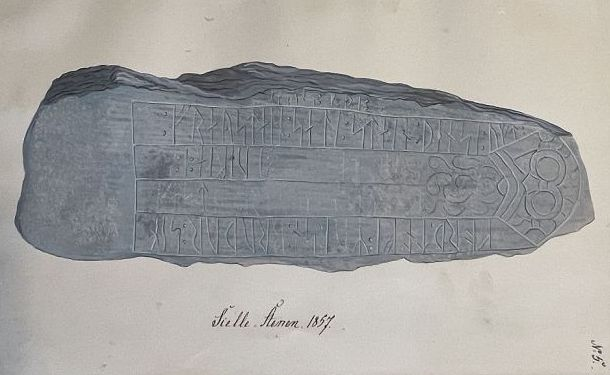
Die interessante Inschrift des Runensteins "Frosten setzte diesen Stein zum Andenken an Gyrth, seinen "Lagsmann" (d.h. Gefährte oder Kamerad), den Bruder des Sigwaldi, ... des Twaeggi (?) ... auf ... Landzunge (oder Heide) veranlasste P. G. Thorsen (*07.08.1811 - 06.05.1883, Bibliothekar, Runenforscher und Historiker) und danach auch Ludv. F. A. Wimmer (*07.02.1839 - 29.04.1920, Philologe und Runenforscher) zu der Annahme, dass hier von Jarl Sigvald aus der Jomswikinger Saga die Rede ist. Diese Mutmaßung wurde schon 1927 von Dr. Lis Jacobsen (*29.01.1882 - 18.06.1961, dänische Runologin und Archäologin) als zu fantasievoll abgelehnt. Dies wird auch von den heutigen Runenforschern noch so gesehen.
13.04.2023
Mit Jütland -71 - Sporup ging es heute weiter. Am Freitag, 10.06.2022, konnte ich mir bei meinem Besuch der Kirche, die ganz für sich alleine in der Landschaft steht, mal ausführlich Zeit nehmen. Die Graverin Heidi Rasmussen war nämlich mit etlichen Arbeiten im Kirchhof beschäftigt und die Kirche stand solange offen. In Absprache mit der Pfarrerin Mette Mommsen, an die ich mich per E-Mail gewandt hatte, war es zu der Terminvereinbarung gekommen. Nochmals auch von dieser Stelle meinen herzlichen Dank für ihr Entgegenkommen! Mange tak!
Zahlreiche neue und qualitativ deutlich bessere Fotos habe ich von daher heute eingestellt. Bei diesem Runenstein zeigt sich an der Steinoberseite der Kopf und das Schwanzende einer Schlange, wie man hier auch auf meinem Foto sieht:

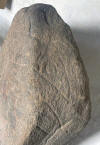
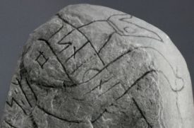
Quelle: Digitale Sammlung Nationalmuseum Kopenhagen - Lizenz: CC-BY-SA - Fotograf: Erik MoltkeDaneben gab es zu diesem Runenstein nichts Neues einzupflegen, da ich eine Überarbeitung, insbesondere zu dem Beinamen "Svidbalke", bereits am 24.05.2022 - siehe unten - durchgeführt hatte.
12.04.2023
Heute konnte ich die Webseite zu Jütland -70 - Hammel überarbeiten. Der Aufwand hielt sich in Grenzen, da der Runenstein erst 1863 als solcher erkannt wurde, obwohl er dort schon seit Jahrhunderten als Sockelstein der Kirche von Hammel eingesetzt ist. Interessant ist, dass Professor P. G. Thorsen (*07.08.1811 - 06.05.1883, Bibliothekar, Runenforscher und Historiker) in seinem Runenwerk "De danske runemindesmærker beskrevne og forklarede, anden Afdeling, Jyllands Runemindesmærker" im Band II - Text aus dem Jahr 1880 schreibt, dass der Stein sich als Stufe in einem Eingang zu einer ehemaligen Waffenkammer, die nicht mehr genutzt wird befindet und nun als sichtbare Schrift nur noch ULFS STIN bietet, da die Fortsetzung in die Wand geht, was überhaupt nicht den Tatsachen entspricht.
Von Magnus Petersen (*04.09.1827 - 01.02.1917, Archäologischer Zeichner und Restaurator) stammt diese Zeichnung, die er auf den 27.08.1877 datiert hat und die ich bei meinem Studientripp im September 2022 in Kopenhagen in der Königlichen Bibliothek in der Hinterlassenschaft von Ludv. F. A. Wimmer (*07.02.1839 - 29.04.1920, Philologe und Runenforscher) fand.

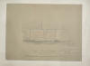
In der Kirche war früher sogar noch ein zweiter, allerdings mittelalterlicher, Runenstein verbaut gewesen, der heutzutage aber verschwunden ist. Seine Existenz und sein Aussehen wurden aber durch Rasmus Henrik Kruse in seiner Abhandlung "Nørre Jyllands Mærkværdigheder i det 19. Aarh. Hs. Bd 1-2 (med) Tillæg 1-2" festgehalten, genaugenommen im Band 2, 1852, S. 49 mit der Tafel 22.

30.03.2023
Seit Monaten war die Webseite der dänischen Runendatenbank - runer.ku.dk - wegen einem verdächtigen Serverzugriff vom Netz und heute entdecke ich im Zusammenhang mit der Überarbeitung meiner Webseite zu Rimsø per Zufall, dass sie - sicherlich erst seit wenigen Tagen - in einer völlig überarbeiteten, modernen und ansprechenden Form wieder abrufbar ist. Endlich ist diese Webseite wieder verfügbar und es freut mich ungemein, dass meine bisherigen Verlinkungen alle funktionieren und ich nichts ändern muss!
30.03.2023 - Verschollener Bericht von 1837 von Cap. August Baggesen in der "Kgl. Bibliotek" in Kopenhagen entdeckt!
Die letzten drei Tage habe ich etliche Stunden mit der Überarbeitung von Jütland - 68 - Rimsø zugebracht. Zu diesem Runenstein fand ich bei meinem Studientripp nach Kopenhagen im September 2022 in der "Kgl. Bibliotek" in Kopenhagen zahlreiche Briefe und Zeichnungen, die es aufzubereiten galt. Das Studium der umfangreichen Literatur war auch zeitaufwändig. Dazu kamen noch meine eigenen Fotos von meiner 2022er Jütland Wikinger Tour vom 15.06.2022.
In der Hinterlassenschaft des Professors P. G. Thorsen (*07.08.1811 - 06.05.1883, Bibliothekar, Runenforscher und Historiker), die in der "Kgl. Bibliotek" in Kopenhagen unter NKS 3296 (in mehreren einzelnen Pappschachteln) verwahrt wird, fand ich am 27.09.2022 in der Pappschachtel Nr. 6 einen angeblich verschollenen Bericht von Cap. August Baggesen (Frederik Ludvig August Haller von Baggesen, *14.08.1795 - 18.04.1865, Biograph und Generalmajor) aus dem Jahr 1837, in dem er über die Runensteine von Rimsø, Stenalt (...fand ich nicht... - erst 1913 wiederentdeckt!) und die beiden von Hobro berichtet. Sowohl Ludv. F. A. Wimmer als auch Jacobsen/Moltke berichten in ihren Runenwerken, dass Finnur Magnusson in seinem Buch "Runamo og Runerne, 1841" anhand dessen Bericht über den Neufund berichtet. Danach sei dieses Dokument aber leider verschwunden. Da Finnur Magnusson auf der S. 553 in der Fußnote "**" berichtet, dass Cap. August Baggesen auf seiner Reise außerdem auch Stenalt und Hobro aufsuchte, sollte es der Beweis dafür sein, dass es tatsächlich der als verschollen geglaubte Bericht ist! Offenbar fehlt aber erwas davon, da es ja mit 2) zum Runenstein von Rimsø losgeht. Die Unterschrift am Ende ist ausgeschnitten, vermutlich von einem Umschlag oder Anschreiben, und aufgeklebt worden. Dessen Zeichnung zum Runenstein von Rimsø, die er mitgeliefert hatte, habe ich im Fundus von P. G. Thorsen aber nicht entdeckt.


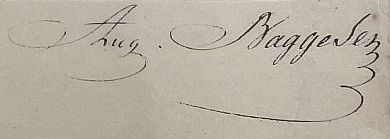
Bis auf einige wenige Feinarbeiten sollte es das nun mit der Aktualisierung zum Runenstein von Rimsø gewesen sein.
21.03.2023
Über YouTube findet sich wohl seit ca. 3 Wochen von Landesmuseen TV ein Video (2:48 Minuten) mit dem Titel "Haithabu: Welterbe liegt größtenteils noch unter der Erde". Als Begleittext findet sich dies: Das Welterbe liegt in Haithabu größtenteils noch immer unberührt unter der Erde. Nur etwa 5% des Geländes wurden ausgegraben. Für diesen Film wurden die Befunde der bislang erfolgten Ausgrabungen digitalisiert. Er erlaubt einen Blick unter die Erde und zeigt die hölzernen Befunde Häuser, Bohlenwege, Brunnen , die bei archäologischen Untersuchungen ausgegraben wurden. Bei den Ausgrabungen wurden nicht nur unzählige Alltagsgegenstände geborgen. Die ausgezeichnete Erhaltung von Bauholz erlaubt es, die Bebauung in Haithabu nachzuvollziehen. Auf Grundlage dieser Daten wurden zwischen 20052008 sieben Häuser und eine Landungsbrücke auf den Grabungsflächen originalgetreu rekonstruiert.
Nachdem Dr. Matthias Toplak zum 01.09.2021 neuer Leiter des Wikinger Museum Haithabu wurde, sorgte er zügig dafür, dass die Besucher im Eingangsbereich der Ausstellung diese digitalisierte Aufarbeitung der jahrzehntelangen Ausgrabungen - vom Noor ausgehend über die Landungsbrücken zu den (heutigen) Haithabu Häusern - über eine Leinwand zu sehen bekommen. Ich konnte mir dies schon persönlich am Montag, 20.06.2022, bei einer Führung mit Dr. Matthias Toplak anschauen.
Außerdem findet sich wohl seit ca. 10 Monaten auf YouTube noch dieser interessante Video "Der archäologische Grenzkomplex Haithabu und Danewerk" von Landesmuseen TV. Zusätzlich werden von denen noch einige weitere gute Videos angeboten, so z.B.: Archäologie zu zweit" - Folge 8 - Haithabu-Forschung im Fokus / Ute Drews - 34 unvergessliche Jahre für Haithabu.
15. / 21.03.2023
Lange genug habe ich es schon vor mir hergeschoben, aber nun bin ich seit Tagen an Jütland - 41 - Fyrkat dran und konnte es zum 21.03.2023 weitestgehend abschließen. Eventuell gibt es noch kleine Nacharbeiten zu verrichten.
Ein besonderer Fund, der nicht in Fyrkat sondern bei den Ausgrabungen am Nordtor des Vallø Borgring auf Seeland von der Museumsinspektorin Nanna Holm am 13. Juli 2017 gemacht wurde - ein kleiner, fein dekorierter Silberbeschlag - gehörte womöglich zu dieser gotländischen Dosenfibel aus Grab IV von Fyrkat, das Grab einer Zauberin. Darüber kam die Vermutung auf, dass diese Völva (Frau mit Stab) mit Harald Blauzahn einst von Burg zu Burg zog, um an verschiedenen Orten ihre Magie wirken zu lassen. Ein Medienbericht zu dem Fund mit dem Titel »Det var satans«: Dette smykke kan have tilhørt Blåtands troldkvinde" von "videnskab.dk" vom 08.08.2017 - in dänischer Sprache - kann hierüber abgerufen werden. Daraus stammt auch dieses Foto (Nationalmuseet/Museum Sydøstdanmark).
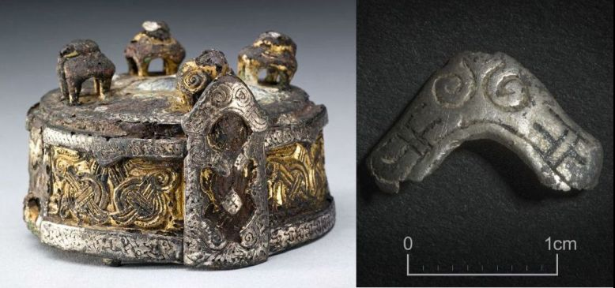
In der aktuellen dänischen TV Serie des Senders DR mit dem Titel "Gåden om Odin" (Start am 08.03.2023) werden im 2. Teil (insg. 28.44 Minuten) mit dem Titel "Haralds Guder" die beiden Teile vor laufender Kamera zusammengepasst (ab Minute 7:50 bis 10.40) - ein wirklich spannender Moment! Anmerken darf ich noch, dass die beiden Fundorte mit heutigen Verkehrsmitteln etwa 320 km auseinander liegen!
Im Køge Museum (Nørregade 4, DK-4600 Køge) wird übrigens seit dem 2. Dezember 2021 bis zum 31. Dezember 2023 eine Ausstellung mit dem Titel "VØLVER, GULD OG GUDER" (Völvur, Gold und Götter) gezeigt.
Die Funde aus Grab IV wurden Ende August 2021 nach Kopenhagen gebracht und dort neuerlichen intensiven Analysen unterzogen. Sie sind Teil des Forschungsprojektes "Tanken bag tingene animisme, shamanisme og vikingetidens materielle kultur - übersetzt: "Die Idee hinter den Dingen Animismus, Schamanismus und die materielle Kultur der Wikingerzeit". Anschließend werden sie ab 2024 in der dann neu gestalteten Wikinger Ausstellung im Nationalmuseum Kopenhagen, die sich mit dem Religionswechsel in den 900er Jahren auseinandersetzen wird, zu sehen sein. Ab 2027 sollen sie dann direkt neben der Ringburg Fyrkat im benachbarten Mühlenhof mit den anderen Funden von Fyrkat dauerhaft ausgestellt werden. Auf diese Webseite der Nordjyske Museer möchte ich in diesem Zusammenhang noch verweisen.
11.03.2023
Am 08.03.2023 ging diese Nachricht um die Welt: "Älteste Inschrift zu Odin auf Gold aus Vindelev entdeckt".
Ende 2020 wurde einer der größten Goldschätze Skandinaviens in Vindelev, in der Nähe von Jelling, auf Jütland durch Ole Ginnerup Schytz gefunden. Er hatte noch nie einen Metalldetektor benutzt. Auf dem Grundstück eines ehemaligen Klassenkameraden im dänischen Vindelev probierte er es Ende Dezember 2020 zum ersten Mal aus. Ohne Vorahnung, einfach nur zum Spaß. Nur wenige Stunden, nachdem er seinen Detektor eingeschaltet hatte, geschah es: Er stieß auf einen der größten Schatzfunde, die je in diesem Land gemacht wurden Das ist der Inbegriff des Glücks, sagte Schytz in einem Interview mit dem dänischen Sender TV Syd. Dänemark ist 43.000 Quadratkilometer groß. Und ich platziere unwissend den Detektor genau an jenem Ort, wo es einen riesigen Schatz zu finden gab.
Jelling wurde etwa um 800 n.Chr. dänische Königsresidenz. Der fast 1 kg schwere Schatz ist jedoch über 200 Jahre älter: Er stammt aus der Zeit ab 530. Auf Münzen und Medaillons finden sich Darstellungen von Göttern und Helden ein früher Einblick in die nordische Mythologie und Grundlage für den Pantheon der Wikingerzeit. Die Entdeckung wurde von Lisbeth M. Imer (*1973, Runologin am Nationalmuseum Kopenhagen) zusammen mit dem Sprachwissenschaftler Krister Vasshus (Universität Bergen) gemacht. Die Schriftforscher haben auf einem der goldenen Brakteaten aus dem o.a. Schatzfund die älteste Inschrift der Welt mit dem Namen des Gottes der nordischen Mythologie, Odin, entdeckt. Sie ist Teil des Satzes Er ist Odins Mann und bezieht sich auf das Bildnis eines unbekannten Königs oder mächtigen Mannes auf dem Brakteaten, der möglicherweise den Namen Jaga oder Jagaz trug. Dies bedeutet, dass die Götter, wie wir sie aus der nordischen Mythologie kennen, bereits im frühen 4. Jahrhundert bekannt waren, 150 Jahre früher als bisher angenommen.
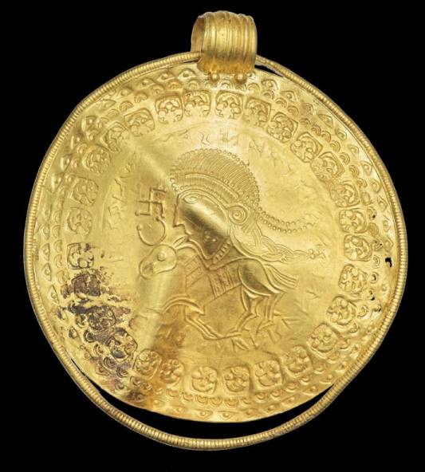
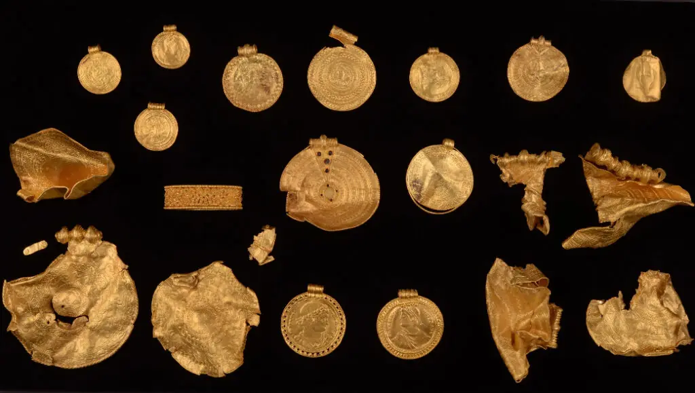
Foto: Arnold Mikkelsen, Nationalmuseum Kopenhagen / Foto: Michael Højlund Rasmussen, Konserveringscenter VejleAußerdem gibt es seit dem 08. März 2023 im dänischen Fernsehen, im Sender DR, eine 6-teilige Reihe von der Historikerin Cecilie Nielsen zum Thema "Gåden om Odin" - natürlich in dänischer Sprache - aber trotzdem sehenswert wie ich meine. Es beginnt mit der 28-minütigen Folge "Manden pa stenen" worin es um die Christusfigur auf dem großen Runenstein von Jelling geht.
Cecilie Nielsen hatte im November 2021 schon eine andere interessante Sendereihe - Gåden om Danmarks første konge - im dänischen TV- siehe unten 13.11.2021.
10.03.2023
Der Runenstein in Jütland - 67 - Øster Alling konnte heute - extremes Sauwetter - von mir aktualisiert werden. Da der Stein schon 1627 erstmals erwähnt wurde, gab es zahlreiche Quellen auszuschöpfen. Von Søren Abildgaard (*18.02.1718 - 02.07.1791, Zeichner, Kupferstecher und Geologe) z.B. stammt dieser Tagebucheintrag (Dagbog VII) - vermutlich aus dem Jahr 1770 - mit der Wiedergabe der Inschrift und Angaben zum Fundort und den Steinmaßen (Heute im Antiqvarisk-Topografisk Arkiv in Kopenhagen verwahrt).
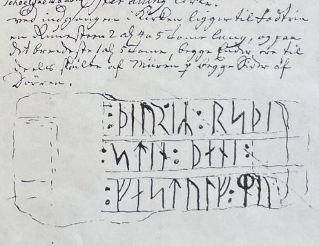
Von Rasmus Henrik Kruse (*07.08.1796 - 30.05.1877, Landschaftsmaler) stammt eine schöne Zeichnung aus dem Jahr 1856 und von Magnus Petersen (*04.09.1827 - 01.02.1917, Archäologischer Zeichner und Restaurator) eine exzellente Zeichnung vom 31.08.1877.


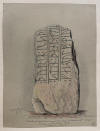
07.03.2023
Heute habe ich mit dem Runenstein von Jütland - 66 - Stenalt bei den Aktualisierungen weitergemacht. Da ich in zurückliegender Zeit schon einiges überarbeitet hatte und da der Runenstein Jahrhunderte verschwunden war, bis er 1913 wieder entdeckt wurde, hielt sich der zeitliche Aufwand in Grenzen. Trotzdem gab es zahlreiche Informationen - von Johannes Meier (1660, Lehrer und Verfasser) / Peder Hansen Resen (*17.06.1625 - 01.06.1688, Jurist und Historiker) u.a. einzubinden.
Die Steinoberfläche war bei meinem Besuch im Rahmen meiner 2022er Jütland Wikinger Tour am Mittwoch, 15.06.2022, von zahlreichen Flechten und Algen übersät. Da wohnt jemand direkt neben einem der ältesten Runensteine Dänemarks und findet keine Zeit den kleinen Stein hin und wieder mal zu reinigen, zumal vom Steinkonservator Leif Vognsen eine Pflegeanleitung vorgegeben wurde, sehr schade!
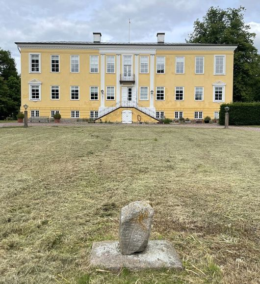
05.03.2023
Der Sjellebro Maskenstein Jütland - 64 - Sjellebro war heute mit der Aktualisierung an der Reihe. Von meinem Besuch am Mittwoch, 15.06.2002, habe ich neue Fotos eingestellt. Die Steinoberfläche war an einigen Stellen schwer von Flechten und Moos überzogen und das angrezende Wäldchen hat ihn schon fast "geschluckt". Dass da niemand aus der Region ein Interesse an einer ehrenamtlichen Pflege hat? Dem zuständigen Museum habe ich heute mal eine E-Mail mit Fotos geschickt und auf den Zustand aufmerksam gemacht. Der Standplatz des Maskensteins war zum Schutz vor alljährlich wiederkehrendem Hochwasser im April 2013 neu angelegt worden. Eine Umsetzung oder die Ausmalung der Maske war von den zuständigem Behörden damals nicht erlaubt worden.

Außerdem war es mir heute auch noch möglich die Seite zu Jütland - 65 - Virring zu überarbeiten. Hier steckt mal wieder einiges an Arbeit drin, weil ich bei meinem Besuch in der Königlichen Bibliothek im September 2022 in Kopenhagen, in den Hinterlassenschaften von P. G. Thorsen (*07.08.1811 - 06.05.1883, Bibliothekar, Runenforscher und Historiker) und Ludv. F. A. Wimmer (*07.02.1839 - 29.04.1920, Philologe und Runenforscher) zahlreiches Material sichten und fotografieren konnte. Darüber fand ich auch auf einer Zeichnung von Magnus Petersen (*04.09.1827 - 01.02.1917, Archäologischer Zeichner und Restaurator), die er am Tag der Herausnahme aus dem Boden am 03.09.1870 anfertigte, erstmals einen Hinweis auf den Lehrer Ring aus Hørning, der es war, der den Treppenstein als Runenstein im Jahr 1865 erkannte.

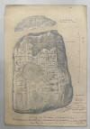
03.03.2023
Heute habe ich die Seite von Jütland - 62 - Hørning aktualisiert. Ich habe Fotos der Original Planke, die aktuell in der neuen Wikingerausstellung "Togtet - på rejse i vikingernes verden" im Nationalmuseum in Kopenhagen ausgestellt ist, Fotos aus dem Juni 2022 der Stabkirchenrekonstruktion neben dem Moesgård Museum und Fotos der heutigen Kirche in Hørning vom Mittwoch, 15.06.2022, eingestellt. Daneben die Zeichnung der Vorder- und Rückseite aus dem Jahr 1894 von Magnus Petersen (*04.09.1827 - 01.02.1917, Archäologischer Zeichner und Restaurator) und einige Skizzen zum Grabungsbefund aus einem Beitrag von Nationalmuseets Arbejdsmark - 1961 und aus Mette Ivseren - Mammen - Grav, kunst og samfund i vikingetid - 1991 - darin: Hørning-graven, En kammergrav fra o. 1000 med kvinde begravet i vognfading, Olfert Voss, S. 189 - 203 (Grabungsplan von der S. 194 - siehe unten).


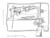
Außerdem war es mir heute auch noch möglich die Seite zu Jütland - 63 - Mygind zu aktualisieren. Da sich an der Lage des Runensteins - er liegt nach wie vor unter der der zugemauerten Nordtür - nichts geändert hat und die Kirche bei meinem Besuch am Mittwoch, 15.06.2022, zudem geschlossen war, gab es auch nicht viel zu verändern. Lediglich einige neue Fotos habe ich eingestellt.
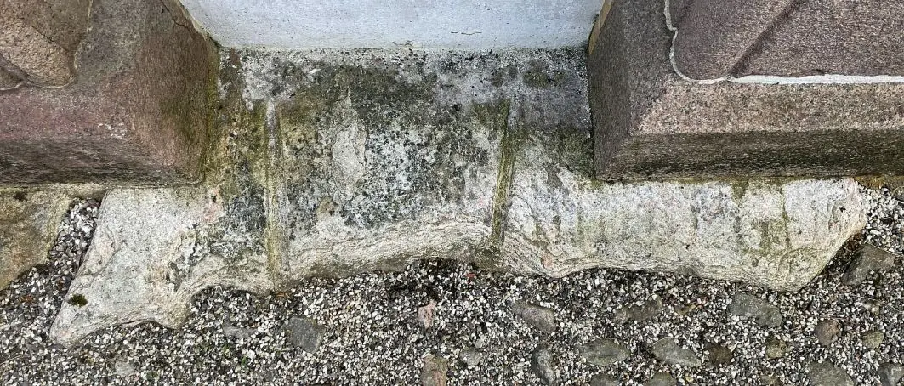
27.02.2023
Seit gestern saß ich über der Aktualisierung von Jütland - 61 - Laurbjerg und kam gut voran. Auch hier sind nämlich etliche frühe Informationen einzupflegen gewesen, immerhin kennt man den Runenstein seit 1690. Es beginnt mit einer Aufzeichnung von Peder Syv (*22.02.1631 - 17.02.1702, Philologe) die sich in der Handschriftensammlung Rostgaard 21 (bewahrt in der "Kgl. Bibliotek" - Den sorte Diamant) in Kopenhagen (Darin: 10 - Peder Syv: Optegnelser om Runemindesmærker og om Mønter. S. 341-371) erhalten hat.
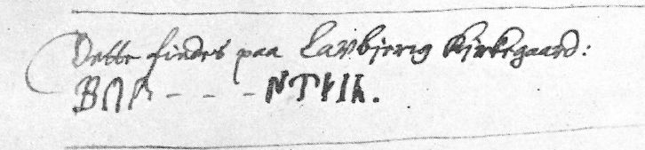
Erik Moltke (*04.04.1901 - 19.10.1984, Runologe, Historiker) hat die o.a. Kopie des Originals in seinem Aufsatz "To runedokumenter" in dem Werk "Acta Philologica Scandinavica", Tidsskrift for nordisk sprogforskning, Niende Bind, 1934-35, S. 193-221, veröffentlicht.
Von Edvard Snedorph Koefoed (*20.11.1811, Gemeindepfarrer in Laurbjerg) hat sich ein Brief, datiert auf den 29. Mai 1852, in P. G. Thorsens (*07.08.1811 - 06.05.1883, Bibliothekar, Runenforscher und Historiker) Nachlass bewahrt. Auch Jens Jacob Asmussen Worsaae (*14.03.1821 - 15.08.1885, dänischer Archäologe und Vorgeschichtler) war vor Ort und hat in sein Notesbog III von 1852 auf der S. 39 einen Eintrag vorgenommen.
Die umfangreichsten Infos kommen allerdings von Rasmus Henrik Kruse (*07.08.1796 - 30.05.1877, Landschaftsmaler und Antiquar) aus seinen "Nørre Jyllands Mærkværdigheder i det 19. Aarh. Hs. Bd 1-2 (med) Tillæg 1-2". In der Tillæg 1, S. 16-17, findet sich ein Textbeitrag und eine Zeichnung (ℓ) aus dem Jahr 1856.

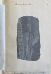
Natürlich gibt es auch hier wieder eine tolle Zeichnung von Magnus Petersen (*04.09.1827 - 01.02.1917, Archäologischer Zeichner und Restaurator), datiert auf den 23.08.1878.

Außerdem gab es noch meine eigenen Fotos vom Besuch anlässlich meiner Jütland Wikinger Tour 2022 - hier war ich am Samstag, 04.06.2022 - einzustellen.
19.02.2023 / fertig am 25.02.2023
Aktuell arbeite ich seit zwei Tagen an der Webseite zu Jütland - 60 - Langå 3 was deutlich mehr Zeit in Anspruch nimmt, als ich mir dachte. Da die Seite auch die Informationen zu den beiden längst verschwundenen Runensteinen Langå 1 und Langå 2 beinhaltet, die man beide aber schon aus den Zeiten von Ole Worm (*13.05.1588 - 31.08.1654, Arzt, Universalgelehrter und der Begründer der Runologie) kennt, gibt es sehr viel Literatur zu sichten und die daraus gewonnenen Erkenntnisse einzupflegen. Da gibt es doch z.B. tatsächlich noch eine handschriftliche Empfangsquittung vom 23. August 1652 von Ole Worm für insgesamt vier Runensteine - Le, Hjermind 2, Torup und Langå 1 - die in Kopenhagen nach der Königlichen Order von König Frederik III. vom 9.2.1652 (siehe: Nordisk Tidsskrift for Oldkyndighed, Band 1, 1832 - ab S. 324 unten), die auf Worms Vorschlag erging, "...Frands Povisk til Halds Lehn: ... begge Longe-Stenene..." in Kopenhagen angeliefert wurden. Das Original dieser Quittung fand ich gerade als Digitalisat über eine Webseite des Rigsarkivet Kopenhagen (Lensregnskaber 1559-1660 - darin dann unter Hald. A. Regnskaber Danmark 1649 - Hald. A. Regnskaber Danmark 1661).

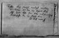
Sogar die angefallenen Kosten für den Transport der Runensteine nach Kopenhagen findet man für den Fall noch in diesen alten Aufzeichnungen "Hald Len regnskab 165253". Eine Kostenliste für die Verschiffung der vier Steine, die von Randers gesandt und bei der neuen Regentskirche in Kopenhagen abgeliefert wurden, datiert in Randers auf den 20. Januar und bezahlt in Viborg am 1. Februar 1653. Hans Madsen, Bürger von Randers, bekam 12 Rdl. (Anm.: Rigsdaler) für Fracht; sechs Mann, die den Bootsführern mit den Steinen halfen, bekamen 3 Mark; 1 Rdl. bezahlt wurde "damit derselbe Stein mit einem Fahrzeug zur Regentskirche kommt" und 1 Rdl. bekam "der Schiffer für seine Mühe". Ein Anhang, datiert auf Hald vom 12. September 1652, besagt, dass "Roe Nielsen i Winkel, Gerichtsvollzieher von Hald, 2 Rdl. erhielt, die er für einen Koch zur Miete ausgelegt hat, um den Verzehr zu sichern, als die Runensteine den Fluss Gudenå hinunter nach Randers kamen".
In dem Zusammenhang habe ich auch erstmals von der Annahme gehört, dass die in den Wirren des Kopenhagener Großbrandes von 1728 verschwundenen neun von insgesamt zwölf Runensteinen, die davor um die Trinitatis Kirche standen und die höchstwahrscheinlich durch die enorme Hitze. der sie bei dem mehrtägigen Brand ausgesetzt waren, schweren Schaden erlitten, sprich geplatzt sind, danach als Baumaterial verwendet wurden (Google Recherche: Selbst harter Granit zerbröselt offenbar bei 600 Grad Celsius). Sie sind vermutlich in dem nahegelegenen Neubau des Mathematikers, Glöckner und Küster dieser Kirche, Herrn Søren Matthiesen (*Juli 1653 - Dezember 1740), auf dessen Geheiß hin im Fundament verbaut worden. Rasmus Nyerup (*12.03.1759 - 28.06.1829, dänischer Literaturhistoriker, Philologe, Folklorist und Bibliothekar) spricht in seinem Werk "Verzeichnis der in Dänemark 1824 noch vorhandenen Runensteine" auf der S. 12 ff. dabei von einem "Bubenstück" und "Raub". Andere Quellen führen hingegen an, dass er wohl zu Unrecht beschuldigt wurde (Dansk Biografisk Leksikon). Wie ich in dem Zusammenhang von Michael Lerche Nielsen (Professor - Department of Nordic Studies and Linguistics in Kopenhagen) erfuhr, lässt das Museum Kopenhagen im Bereich der Trinitatis Kirche immer mal wieder Ausgrabungen vornehmen, auch in der Hoffnung zumindest mal Bruchstücke der damals verschwundenen Runensteine zu finden. Die Behörden hätten nach dem Großbrand einen Wiederaufbau angeordnet, so dass die verschwundenen Steine in vielen Fundamenten /Gebäuden rund um die Trinitatis Kirche Verwendung gefunden haben könnten.
Quelle: Runestenene ved Rundetaarn - Et bidrag til dansk Museumshistorie - Victor Hermansen, in: Historiske Meddelelser om Staden København og dens Borgere, Tredje Række, II. Bind, 1938, S. 333-366 - Scan der Quittung auf der S. 347 (S. 355 in der pdf-Datei).
15.02.2023
Die letzten Tage habe ich die Verlinkungen zu "Den Danske Atlas" von Erik Pontoppidan (Der Jüngere, dänisch-lutherischer Bischof, Theologe und Autor, *03.09.1698 - 20.12.1764) aktualisiert, nachdem mir der Betreiber per E-Mail mitgeteilt hatte, dass ihre Seite jetzt wieder im Netz verfügbar ist. Sie wurde völlig neu gestaltet und um andere Themen enorm erweitert - "Christian IV" (1577-1648) / Ludvig Holberg 1684 1754 / Nordnorge / Danske historiske rejser / Acton Friis - Tag med på en Danmarks rundrejse 1921 (Begleiten Sie uns auf eine Tour durch Dänemark 1921) / Danske Herregårde - besøg 240 Danske Herregårde fra før 1850 (Besuchen Sie 240 dänische Herrenhäuser aus der Zeit vor 1850) / H C Andersen (1805-1875) / Danske Byer - Tag med på historisk rejse til danske byer (Begleiten Sie uns auf eine historische Reise in dänische Städte) / Bornholms Beskrivelse - Bornholms beskrivelse 1756 og en Rejse 1815 (Bornholms Beschreibung 1756 und eine Reise 1815) / Kongerækken - Kongerækken op til Chr. IV. (Die Königslinie bis Chr. IV.) / Trap 1860 - Kongeriget Danmark (Trap 1. udgave) 1860 / Tranquebar - 1620-1845 - Tranquebar var en dansk handelsstation og koloni på Coromandelkysten i det sydøstlige Indien (Tranquebar war ein dänischer Handelsposten und eine Kolonie an der Koromandelküste im Südosten Indiens).
Außerdem habe ich zu Jütland - 69 - Kolind - meine Webseite auf den neuesten Stand gebracht. Von meinem Kopenhagen Tripp im September 2022 konnte ich diverse Fundstücke einarbeiten. Der Entdecker des Runensteins, Kaplan Erik Holst, hat am 19.12.1869 einen Brief mit einer Zeichnung an Prof. P. G. Thorsen geschickt, die ich in dessen Hinterlassenschaft in der Königlichen Bibliothek in Kopenhagen (Pappschachtel Nummer 6) auffand. Außerdem habe ich noch meine neuesten Fotos vom Juni 2022 eingestellt.


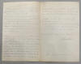

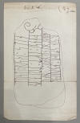
05./06.02.2023
Gestern und heute habe ich mal außer der Reihe zu Fünen - 86 - Nonnebakken eine Überarbeitung vorgenommen. Im Internet fand ich über Heidelberger historische Bestände digital die 5-bändige Ausgabe von Georg Braun (*1541 - 1622) und Frans Hogenberg (*1535 - 1590) mit dem Titel Civitates orbis terrarvm, in der sich im Band 5 aus dem Jahr 1593 die erste Ansicht von Odense/Nonnebakken befindet. Den Band kann man sich in zwei Varianten downloaden (281 MB oder 978 MB).
Außerdem sind über zahlreiche Bodenradaruntersuchungen des in Wien ansässigen Institut LBI ArchPro (Ludwig Boltzmann Institut für Archäologische Prospektion und Virtuelle Archäologie) in Zusammenarbeit mit dem Museum Odense in 2019 neue Erkenntnisse in Odense zu Nonnebakken angefallen, die ich so noch nicht erfasst hatte.
31.01.2023
Die letzten Tage habe ich mich mal zwischendurch ausführlich mit der Person Peder Hansen Resen (*17.06.1625 - 01.06.1688, Jurist und Historiker) und seinem Atlas Danicus, der ersten umfassenden Landesbeschreibung, auseinandergesetzt. Dabei musste ich festellen, dass mein bisheriger Eintrag fehlerhaft, bzw. unvollständig war. Deshalb habe ich den korrigiert und die Aktualisierung der betreffenden Seiten heute vorgenommen. Über diesen Link kann man eine erhaltene Originalseite (sw Scan/Foto) mit der eigenhändigen Unterschrift von Resen abrufen.
Peder Hansen Resen hat mit dem von ihm über 20 Jahre gesammelten Material das großartige Werk "Atlas Danicus", bestehend aus letztlich 39 Folianten, geschaffen. Nur geringe Teile wurden aber schon zu seiner Lebzeit gedruckt. Die Folianten wurden wenige Jahre nach seinem Tod 1692 an die Königliche Bibliothek Kopenhagen übergeben. Aufbewahrt wurden sie auf dem Dachboden der Trinitatis Kirche. Dort wurden sie fleißig studiert, abgeschrieben und zeitweise ausgeliehen. Leider wurde dort ein Großteil davon beim Kopenhagener Großbrand 1728 zerstört. Es hat sich neben einigen Originalseiten - siehe Arnamagnäanische Sammlung - AM 359 fol. / AM 360 fol. / AM 361 fol. und AM 362 fol. (digitalisiert) - nur eine (verkürzte) Abschrift und außerdem Kupferstiche von etwa 200 Städteansichten aus der Vogelperspektive erhalten. Originale dieser AM 359/360/361 fol sind über die Universität Kopenhagen - Institut for Nordiske Studier og Sprogvidenskab (NorS) - AM 359 fol / AM 360 fol / AM 361 fol - in sw abrufbar. Eine zweite (verkürzte) Ausgabe war von Vincent Lerche (*04.04.1666 - 28.07.1742, Jurist, Architekt) beauftragt worden, diese wurde aber beim Brand von Schloss Christiansborg im Jahr 1794 vernichtet.
In der Königlichen Bibliothek Kopenhagen wird seit 1803 in der Sammlung Uldall (186 folio) diese einzige verbliebene Ausgabe, die in den 1750er Jahren durch den Hofbaumeister Laurids de Thurah (*04.03.1706 - 06.09.1759) aus verstreuten Resten des Atlas Danicus in 7 Bänden rekonstruiert worden war, aufbewahrt:
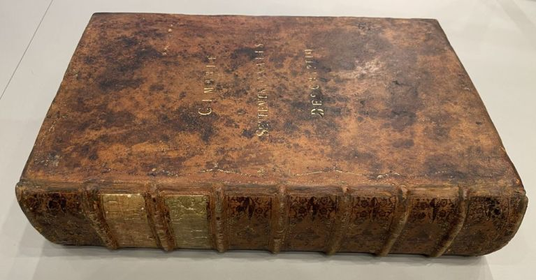
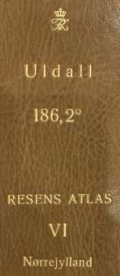

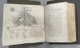
Band VI - Cimbriæ Septentrionalis Descriptio, 421 Blatt, paginiert von 1-780, 31 Tafeln, Pläne und Karten, Format in H/B/D: 40 cm x 29,5 cm x 9,5 cm - Schuberbeschriftung - Ansicht von Viborg (Vergrößerte Darstellung per Mausklick)
Wie diesem Titel zu entnehmen ist, gehörte dieses Exemplar vormals Adam Gottlob Graf von Moltke (*10.11.1710 - 25.09.1792, Staatsmann, Diplomat). Nach dessen Tod erwarb Herman Treschow (*11.12.1739 - 02.05.1797, Professor für Theologie, Pfarrer) diese Ausgabe. Peter Uldall (*29.06.1743 - 11.11.1798, Jurist, Theologe) wiederum kaufte sie für 170 Rigsdaler (Rigsdaler zu 24 Skilling - damals 1 ½ Mark) nach dessen Ableben. Er hatte aber nicht lange Freude daran, denn er starb ein Jahr später an einem Schlaganfall. Sein Sohn, Justizrat W. A. Uldall, schenkte diese Ausgabe der Kgl. Bibliothek im Jahr 1803, wo dieses großartige Werk noch heute verwahrt wird.
Wer etwas mehr zu der Person Peder Hansen Resen und seiner Arbeit Atlas Danicus erfahren möchte kann dies am einfachsten - nämlich auch in deutscher Sprache - über diesen Link - S. IX bis XXI - in der Ausgabe "Atlas Danicus, Møn, Udgivet 1990, Henrik Hertig, Facsimile af håndskriftet Uldall 186 fol. III pag. 2-121" tun.
Der o.a. Laurids de Thurah hat übrigens 1746-49 das 2-bändige Werk "Den danske Vitruvius" herausgebracht. Die Bände enthalten Grundrisse, Ansichten und Querschnitte der bemerkenswertesten Gebäude des Königreichs Dänemark sowie der Königlich Deutschen Provinzen und eine kurze Beschreibung der einzelnen Gebäude im Besonderen (z.B. Band 1, Tafel LXXIII - Aufrißzeichnung Trinitatis Kirche und Runder Turm). Die digitalisierte Ausgabe kann über die Königliche Bibliothek in Kopenhagen angerufen werden. Diese reich bebilderten Bücher sind in drei Sprachen - Dänisch, Französisch und Deutsch - verfasst - sehr praktisch! Im Antiquariat gibt es aktuell eine Original Ausgabe für 11.000 im Angebot.
29.01.2023
Heute habe ich noch eine Ergänzung zum Runenstein Jütland - 27 - Ferslev eingepflegt, die mir erst die Tage zugänglich wurde. In der Abhandlung von Erik Moltke (*04.04.1901 - 19.10.1984, Runologe, Historiker), To runedokumenter, S. 208-209, in: Acta Philologica Scandinavica, Tidsskrift for nordisk sprogforskning, Niende Bind, 1934-35, S. 193-221, hat er die Aufzeichnungen von Peder Syv (*22.02.1631 - 17.02.1702, Sprachforscher und Historiker), die dieser 1685 angefertigt hat und die sich in "Rostgardiana 21, fol. 4" in der Königlichen Bibliothek in Kopenhagen erhalten haben, aufbereitet.

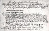
Quelle: Der digitalen Sammlung des Nationalmuseums Kopenhagen entlehnt. Lizenz: Public Domain - Original von mir unten zugeschnitten - Um die Passage zum verschwundenen Runenstein von Gudum gekürzt.
Aus der gleichen Quelle von Erik Moltke, S. 206-207, stammt diese Aufzeichnung von Peder Syv zum Runenstein Jütland - 59 - Ulstrup die ich ebenfalls heute ergänzt habe. Komischerweise ist die nicht in der Digitale Sammlung abrufbar.
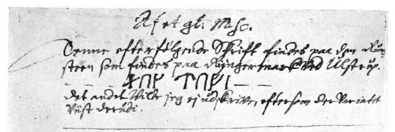
23./24./25.01.2023
Heute - 23.01.2023 - habe ich angefangen die Webseite zu Jütland - 59 - Ulstrup, zu dem Runenstein im Park des Herrenhofes Ulstrup zu aktualsieren. Auch hier - da erstmals 1588 (!) erwähnt - gibt es viel zu tun. Das werde ich sicherlich heute nicht komplett hinbekommen - Ende 25.01.2023.

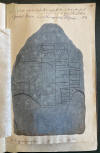

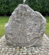
Auf deren Webseite steht übrigens (übersetzt): "Der Zutritt zum Schlosspark und Park ist nur im Rahmen der jährlichen Veranstaltungen möglich. Das Hauptgebäude und der Zuchtbetrieb sind denkmalgeschützt."
---
Die Tage habe ich bemerkt, dass alle meine Verlinkungen zu der Webseite "www.chr4.dk", über die man pdf-Dateien zum "Den Danske Atlas" von Erik Pontoppidan (der Jüngere, *03.09.1698 - 20.12.1764) abrufen konnte, unbrauchbar wurden. Es öffnet sich stattdessen ein Pop-up Fenster, das die Eingabe einer Anmeldung/Passwort verlangt. Ich habe irgendwo eine Mail Adresse zum Betreiber - niels@chr4.dk - im Netz entdeckt und mal nachgefragt. Er antwortete prompt und gab an (übersetzt): "Nein, nein, wir gestalten nur um, es wird in den nächsten Wochen wieder geöffnet - ich kann dir auch die PDF-Dateien schicken, wenn du schreibst, welche das sind." Das beruhigt mich, aber ich befürchte, dass mein bisherigen Links dann ins Leere laufen und mir das einen Haufen Zusatzarbeit beschert - mal abwarten!
22.01.2023
Heute habe ich zu Jütland - 57 - Vejerslev / Høje Stene die Fotos aus meiner 2022er Jütland Wikinger Tour eingepflegt. Neben den Fotos der beeindruckenden Rekonstruktion der ehemals ca. 90 m langen Schiffssetzung gab es noch Erkenntnisse aus dem Kopenhagen Studien Tripp aufzubereiten.
Im Antikvarisk-Topografisk Arkiv durfte ich nämlich am Dienstag, 27.09.2022, zu Gast sein und die vier Bände von Rasmus Henrik Kruse (*07.08.1796 - 30.05.1877, Landschaftsmaler) "Nørre Jyllands Mærkværdigheder i det 19. Aarh. Hs. Bd 1-2 (med) Tillæg 1-2" in Händen halten und fotografieren. Darin befindet sich neben seinen Notizen diese Zeichnung des mittelalterlichen Runensteins an der Kirche von Vejerslev.


Außerdem habe ich mir heute noch die Webseite zu dem Runenstein in Jütland - 58 - Sønder Vinge vorgenommen. Dieser wurde 1866 von Pfarrer Theodor Christian Taaffe (*23.03.1824 - 21.03.1885, zw. 1864 und 1879 Pfarrer im Pastorat Langå, Torup und Sønder Vinge) als Eck- und Grundstein in der Kirche von Sønder Vinge entdeckt, der Pfarrer Taaffe, der auch bei anderen Runensteinen in der Region - Ålum 1 und 2, Langå 2 - Erwähnung fand. Es ist der am schwierigsten zu lesende dänische Runenstein. Die Steinoberfläche gleicht einer Mondlandschaft mit Bergen und Kratern.
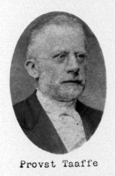
Bildquelle21.01.2023
Am 17.01.2023 ging eine Pressemeldung um die Welt:
Verdens eldste runestein - so auch der Titel einer norwegischen Webseite des "Historisk Museum" der Universität Oslo (auch in Englisch verfügbar). Dort heißt es dann (übersetzt):
Im Herbst 2021 untersuchten die Archäologen des Museums einen Friedhof in Svingerud am Tyrifjord (ca. 30 km nw von Oslo). In einem der Gräber entdeckten sie einen Stein mit mehreren Runeninschriften. Verbrannte Knochen und Holzkohle aus dem Grab zeigen, dass die Runen zwischen 1 und 250 n. Chr. geschnitzt wurden. Dies ist somit der älteste Runenstein, den wir kennen. Der norwegische Runenstein erregt internationale Aufmerksamkeit unter Runenforschern und Archäologen. Die bis zu 2.000 Jahre alten Inschriften stammen aus der allerältesten Zeit der rätselhaften Geschichte der Runenschrift. Der Stein wurde nach dem Fundort benannt und heißt jetzt Svingerudsteinen. Vor 1.800 bis 2.000 Jahren stand jemand am Tyrifjorden und schnitzte Runenzeichen in den 31 x 32 cm großen Felsbrocken aus rotbraunem Ringeriks-Sandstein. Sie sprachen eine alte Sprache, die wir Altnordisch nennen können. Altnordisch ist die Muttersprache der heute in Skandinavien gesprochenen nordischen Sprachen.
Eine Frau namens Idibera?
Ist es der Name der begrabenen Person, der in den Stein gemeißelt ist? Auf der Vorderseite des Steins heben sich neben anderen Inschriften acht Runen deutlich ab. In Buchstaben umschrieben heißt es: idiberug. Ist der Stein für Idibera gemacht? Oder sollte man den Namen Idibergu oder den Familiennamen Idiberung schreiben? Die Schreibweise in älteren Inschriften war sehr unterschiedlich, und die Sprache hat sich von der Zeit, als diese Runen geschnitzt wurden, bis zur Wikingerzeit und dem Mittelalter stark verändert. Es ist daher anspruchsvoll, die Botschaft auf dem Stein zu interpretieren.
18.01.2023
Heute habe ich die Seite zu Jütland - 55 - Hjermind überarbeitet. Ursprünglich gab es zwei Runensteine in Hjermind. Der Stein 1 wurde erstmals 1627 von Skonvig erwähnt. Er soll früher auf einem Hügel, dem "Runehøy" gestanden haben. Dieser konnte später als Grabhügel bei Sønder Tulstrup - ca. 3 km östlich von Hjermind - identifiziert werden. Später wurde der Stein wieder vergessen und erst 1809 vom damaligen Pfarrer in Hjermind Pastor Hans Bjerregaard (*22.02.1766 - 12.01.1860 - Pfarrer von 1798-1857) entdeckt. Ein 80-jähriger Mann hatte ihm nämlich erzählt, dass er als Kind bei einem großen Stein mit "Krimskrams" gespielt hätte. Laut dem "Ordbog over det danske sprog - Historisk Ordbog 1700-1950" steht dieses alte dänische Wort z.B. für "Runen / unverständliche Zeichen". Er zeigte dem Pfarrer die Stelle und wenige Zentimeter unter der Erde fand man tatsächlich diesen immerhin 165 cm großen Runenstein. Im Jahr 1824 wurde er auf Veranlassung des Pfarrers in den Pfarrhofgarten gebracht, wo er heute noch aufgestellt ist.
Der Stein 2 wurde auf königliche Anforderung 1652 nach Kopenhagen verschickt, stand beim Runden Turm und ging dann aber beim Großbrand von 1728 leider für immer verloren.

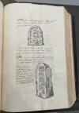
Dies ist die S. 143 aus dem "Atlas Danicus" von Peder Hansen Resen und zeigt beide Runensteine.
-------------
Außerdem habe ich es heute auch noch geschafft die Seite zu Jütland - 56 - Bjerring weitestgehend zu überarbeiten. Bei meinem Besuch in der Kirche am Montag, 06.06.2022, habe ich die Maske im Mammenstil, die am oberen linken Rand der Rückseite eingeritzt und mit roter Farbe ausgemalt ist, erstmals mit dem Handy fotografiert und kam darüber zu einem viel besseren Ergebnis als bisher. Die nette Dame, die als "Graver" bei meinem Besuch gerade den Kirchhof pflegte und mit der ich mich eine Weile unterhielt, wusste überhaupt nicht, dass es auf der Steinrückseite eine Maske gibt, weshalb ich ihr mein Foto auf dem Handy zeigte. Die laminierte Info zu dem Runenstein und seiner Inschrift, die auf der Fensterbank rechts vom Runenstein liegt, erwähnt die Maske auch überhaupt nicht.

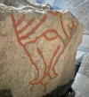

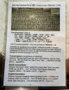
In der Kirche von Bjerring hängt schon seit dem 23. September 2018 ein hochwertiges 1:24 Modell des Gokstadschiffes von der Decke, das ich bislang noch nicht gesehen hatte (Letzter Besuch 25.08.2016).

Ich will jetzt nur noch einige Ergänzungen zum Mammengrab / Fotos aus dem Runensteinpark in Bjerringbro nachlegen (Nachträge am 21.01.2023 eingepflegt).
17.01.2023
Heute habe ich die Seite zu Jütland - 54 - Asmild auf den neuesten Stand gebracht.
Bei der Gelegenheit habe ich zufällig bemerkt, dass die Webseite von "Skråfoto" von gestern auf heute in völlig neuem Outfit ins Netz gestellt wurde. Darüber kann man kostenfrei und frei von Urheberrechten - Lizenz CC BY 4.0 - Luftbilder über die Eingabe einer Adresse in Dänemark abrufen. Aktuell sind Aufnahmen aus den Jahren 2017, 2019 und 2021 abrufbar. Sie sollen zukünftig auch alle zwei Jahre aktualisiert werden. Deren Aufnahmen sind mit Abstand das Beste was es frei verfügbar gibt! Allerdings habe ich feststellen müssen, dass es gegenüber der früheren Version, so z.B. für Stolbro Næs oder Høje Stene bei Vejerslev - nicht mehr möglich ist, die Örtlichkeit aufzufrufen, da sie außerhalb der bebauten Region liegt! Das ist sehr schade.